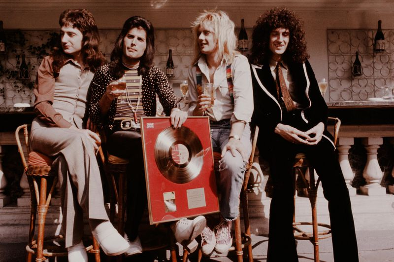
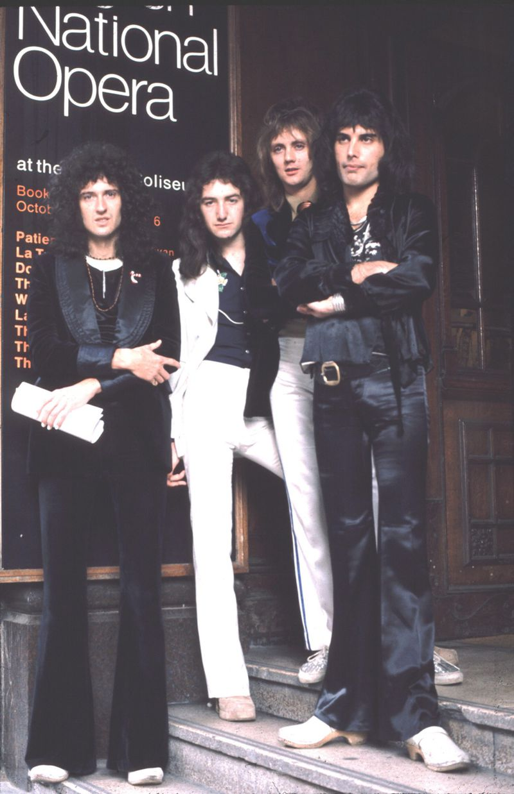

After signing a record deal with Trident Studios in 1973,
"Killer Queen"
(David Tan/Shinko Music/Getty Images)

By 1975, Freddie and QUEEN Began their tour around the world width
big stops in the U.S.
"A Night at the Opera"
(Chris Walter/Wireimage)